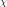
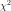

Probabilistic modelling¶
Continuous parametric distributions¶
Distribution(*args) |
Base class for probability distributions. |
DistributionCollection(*args) |
Collection. |
PythonDistribution([dim]) |
Allow to override Distribution from Python. |
ChaospyDistribution(dist) |
Allow to override Distribution from a chaospy distribution. |
SciPyDistribution(dist) |
Allow to override Distribution from a scipy distribution. |
Arcsine(*args) |
Arcsine distribution. |
Beta(*args) |
Beta distribution. |
Burr(*args) |
Burr distribution. |
Chi(*args) |
 distribution. |
ChiSquare(*args) |
 distribution. |
Dirichlet(*args) |
Dirichlet distribution. |
Epanechnikov(*args) |
Epanechnikov distribution. |
Exponential(*args) |
Exponential distribution. |
FisherSnedecor(*args) |
Fisher-Snedecor distribution. |
Frechet(*args) |
Frechet distribution. |
Gamma(*args) |
Gamma distribution. |
GeneralizedExtremeValue(*args) |
Generalized ExtremeValue distribution. |
GeneralizedPareto(*args) |
Generalized Pareto distribution. |
Gumbel(*args) |
Gumbel distribution. |
Histogram(*args) |
Histogram distribution. |
InverseChiSquare(*args) |
InverseChiSquare distribution. |
InverseGamma(*args) |
InverseGamma distribution. |
InverseNormal(*args) |
Inverse normal distribution. |
InverseWishart(*args) |
Inverse-Wishart distribution. |
KPermutationsDistribution(*args) |
KPermutations distribution. |
Laplace(*args) |
Laplace distribution. |
Logistic(*args) |
Logistic distribution. |
LogNormal(*args) |
Lognormal distribution. |
LogUniform(*args) |
LogUniform distribution. |
MeixnerDistribution(*args) |
Meixner distribution. |
NonCentralChiSquare(*args) |
NonCentralChiSquare distribution. |
NonCentralStudent(*args) |
NonCentralStudent distribution. |
Normal(*args) |
Normal distribution. |
NormalGamma(*args) |
NormalGamma distribution. |
Rayleigh(*args) |
Rayleigh distribution. |
Rice(*args) |
Rice distribution. |
SmoothedUniform(*args) |
SmoothedUniform distribution. |
Student(*args) |
Student distribution. |
Trapezoidal(*args) |
Trapezoidal distribution. |
Triangular(*args) |
Triangular distribution. |
TruncatedNormal(*args) |
TruncatedNormal distribution. |
Uniform(*args) |
Uniform distribution. |
VonMises(*args) |
von Mises distribution. |
Weibull(*args) |
Weibull distribution. |
Wishart(*args) |
Wishart distribution. |
Discrete parametric distributions¶
Bernoulli(*args) |
Bernoulli distribution. |
Binomial(*args) |
Binomial distribution. |
Dirac(*args) |
Dirac distribution. |
Geometric(*args) |
Geometric distribution. |
Multinomial(*args) |
Multinomial distribution. |
NegativeBinomial(*args) |
NegativeBinomial distribution. |
Poisson(*args) |
Poisson distribution. |
Skellam(*args) |
Skellam distribution. |
UserDefined(*args) |
UserDefined distribution. |
ZipfMandelbrot(*args) |
ZipfMandelbrot distribution. |
Parametrized distributions¶
ParametrizedDistribution(*args) |
Parametrized distribution. |
DistributionParameters(*args) |
Define a distribution with particular parameters. |
ArcsineMuSigma(*args) |
Arcsine distribution parameters. |
BetaMuSigma(*args) |
Beta distribution parameters. |
GammaMuSigma(*args) |
Gamma distribution parameters. |
GumbelMuSigma(*args) |
Gumbel distribution parameters. |
GumbelAB(*args) |
Gumbel distribution parameters. |
LogNormalMuSigma(*args) |
LogNormal distribution parameters. |
LogNormalMuSigmaOverMu(*args) |
LogNormal distribution parameters. |
WeibullMuSigma(*args) |
Weibull distribution parameters. |
Pseudo-random numbers generator¶
RandomGenerator(*args, **kwargs) |
Uniform random generator. |
RandomGeneratorState(*args) |
Random generator state. |
Combining and transforming distributions¶
BayesDistribution(*args) |
Bayes distribution. |
ComposedDistribution(*args) |
Composed distribution. |
CompositeDistribution(*args) |
Composite distribution. |
ConditionalDistribution(*args) |
Conditional distribution. |
CumulativeDistributionNetwork(*args) |
Composed distribution. |
MaximumDistribution(*args) |
Maximum distribution. |
MaximumEntropyOrderStatisticsDistribution(*args) |
MaximumEntropyOrderStatistics distribution. |
OrderStatisticsMarginalChecker(*args) |
Compatibility tests of marginals with respect to the order statistics constraint. |
PosteriorDistribution(*args) |
Distribution conditioned by observations. |
ProductDistribution(*args) |
Product distribution. |
RandomMixture(*args) |
RandomMixture distribution. |
TruncatedDistribution(*args) |
Truncated distribution. |
KernelMixture(*args) |
Build a particular linear combination of probability density functions. |
Mixture(*args) |
Build a linear combination of probability density functions. |
Copulas¶
Refer to Copulas.
Copula(*args) |
Base class for copulas. |
ArchimedeanCopula(*args) |
Base class for bivariate Archimedean copulas. |
AliMikhailHaqCopula(*args) |
AliMikhailHaq copula. |
ClaytonCopula(*args) |
Clayton copula. |
FarlieGumbelMorgensternCopula(*args) |
FarlieGumbelMorgenstern copula. |
FrankCopula(*args) |
Frank copula. |
GumbelCopula(*args) |
Gumbel copula. |
IndependentCopula(*args) |
Independent copula. |
EmpiricalBernsteinCopula(*args) |
EmpiricalBernstein copula. |
ExtremeValueCopula(*args) |
ExtremeValue copula. |
MaximumEntropyOrderStatisticsCopula(*args) |
MaximumEntropyOrderStatisticsCopula copula. |
MinCopula(*args) |
MinCopula. |
NormalCopula(*args) |
Normal copula. |
Combining and transforming copulas¶
ComposedCopula(*args) |
Merge of a collection of independent copulas. |
SklarCopula(*args) |
Sklar copula. |
OrdinalSumCopula(*args) |
Copula built as an ordinal sum of copulas. |
Random vectors¶
RandomVector(*args) |
Random vectors. |
PythonRandomVector([dim]) |
Allow to overload RandomVector from Python. |
CompositeRandomVector(*args) |
Proxy of C++ OT::CompositeRandomVector. |
ConditionalRandomVector(*args) |
Conditional random vector. |
ConstantRandomVector(*args) |
Proxy of C++ OT::ConstantRandomVector. |
UsualRandomVector(*args) |
Proxy of C++ OT::UsualRandomVector. |
Samplers¶
MCMC(*args) |
Monte-Carlo Markov Chain. |
RandomWalkMetropolisHastings(*args) |
Random Walk Metropolis-Hastings method. |
CalibrationStrategy(*args) |
Calibration strategy. |
Low-level distribution functions¶
DistFunc_pNormal(x[, tail]) |
CDF of an unit-variance centered Normal distribution. |
DistFunc_qNormal(p[, tail]) |
Quantile of an unit-variance centered Normal distribution. |
DistFunc_rNormal(*args) |
Realization of an unit-variance centered Normal distribution. |
DistFunc_kFactor(n, p, alpha) |
Exact margin factor for bilateral covering interval of a Normal population. |
DistFunc_kFactorPooled(n, m, p, alpha) |
Exact margin factor for bilateral covering interval of pooled Normal populations. |